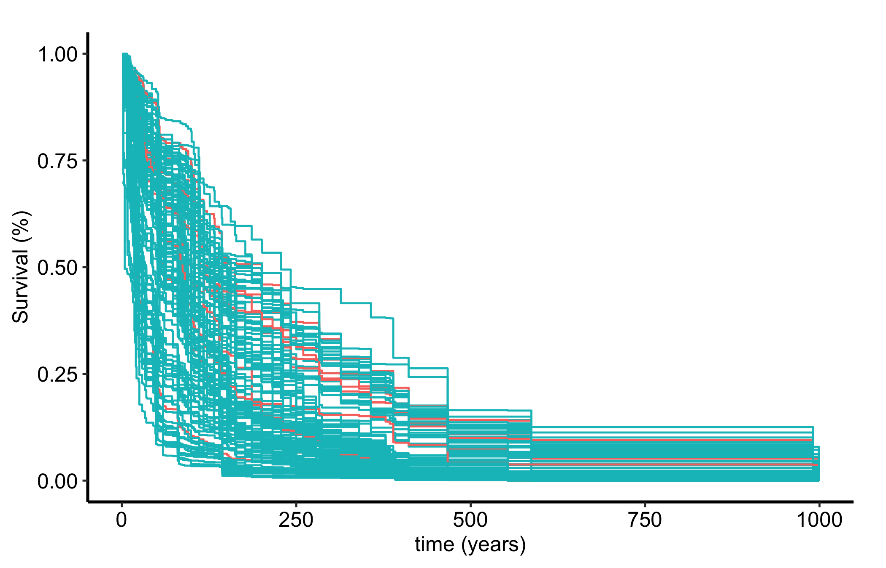
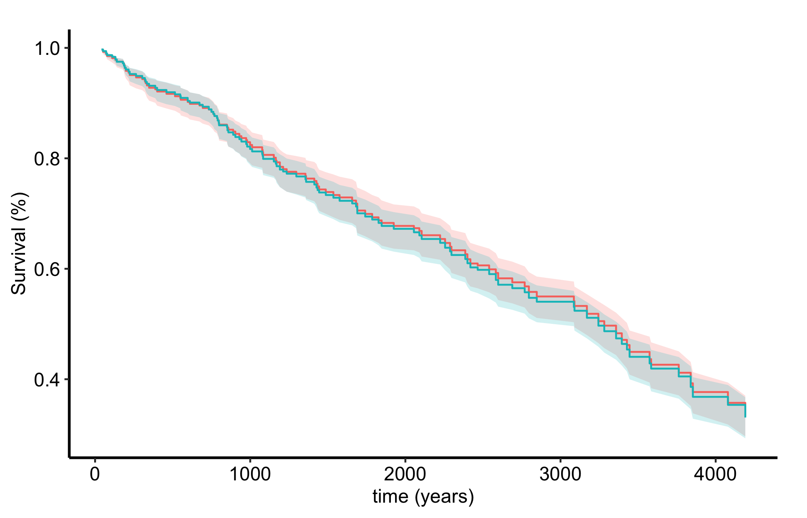

Once the error curve says the forest has converged, the next question is what the forest actually predicts. For a survival forest the answer is unusual: the prediction is not a single number but an entire survival curve for each observation. The model gives every patient their own estimated probability of being event-free over time, conditioned on all of their covariates at once.
Reach for gg_rfsrc() when you want to see those predicted curves. It is the view to use when the question is about heterogeneity (how much do predicted risks vary across the cohort?) or about a group contrast that comes from the full multivariable model rather than a single univariate split. Two displays cover most needs: the per-observation curves, which show the spread of predicted risk across patients, and a population summary that averages those curves within levels of a grouping variable. We finish the chapter with a related tool, gg_survival(), for the raw empirical survival you compare the model against.
25.2 The data it needs
gg_rfsrc() reads a fitted rfsrc survival object, so the input is the same formula and data frame you used for the error chapter: a Surv(time, status) outcome (follow-up time plus a 1/0 event indicator) and the predictors on the right-hand side. Nothing about this view needs block.size = 1; that argument only matters for the error curve, so we drop it here.
Sample size: 137
Number of deaths: 128
Number of trees: 100
Forest terminal node size: 15
Average no. of terminal nodes: 6.13
No. of variables tried at each split: 3
Total no. of variables: 6
Resampling used to grow trees: swor
Resample size used to grow trees: 87
Analysis: RSF
Family: surv
Splitting rule: logrank *random*
Number of random split points: 10
(OOB) CRPS: 62.52252963
(OOB) standardized CRPS: 0.06258511
(OOB) Requested performance error: 0.29050568
For the grouped and empirical views later in the chapter we switch to the pbc primary biliary cirrhosis trial, which carries a randomized treatment variable to stratify on.
25.3 Build it
gg_rfsrc(object) returns one OOB (out-of-bag) predicted survival curve per subject. Plotting them together gives the bare view: every patient’s predicted survival probability over time, drawn on one set of axes.
plot(gg_rfsrc(rf)) +theme_hv_manuscript()

Figure 25.1: Out-of-bag predicted survival curves, one per patient, showing the spread of predicted risk across the cohort
That fan of curves is the forest’s picture of the cohort. The pattern is the same two lines as everywhere else in this part of the book: a gg_*() constructor on the fitted forest, wrapped in plot() and themed.
25.4 Read it
A panel of predicted curves rewards reading the spread, not any single line.
The width of the fan is the model’s sense of how much patients differ. Low-risk subjects stay high; high-risk subjects drop early. A tight bundle of curves says the covariates do not separate patients much; a wide fan says they do.
The overall level is the cohort’s typical survival. Read it the way you would a Kaplan-Meier curve, as a probability that starts near 1 and steps down.
The far-right tail rests on the patients still at risk late in follow-up, which are usually few. Treat the spread there with the same caution you give the tail of any survival estimate.
Because these are OOB predictions, each curve was produced by trees that never saw that patient, so the fan is an honest picture rather than a re-description of the training data.
25.5 Variations
25.5.1 Predicted survival by group
To compare groups, pass by = to gg_rfsrc(). It averages the predicted curves within each level of the grouping variable, giving a model-based analogue of stratified survival. We use pbc and its randomized treatment arm.
data(pbc, package ="randomForestSRC")rf2 <-rfsrc(Surv(days, status) ~ ., data = pbc, ntree =100)plot(gg_rfsrc(rf2, by ="treatment")) +theme_hv_manuscript()

Figure 25.2: Predicted survival averaged within each treatment arm of the pbc trial, the model-based analogue of stratified survival
The two treatment arms track closely, consistent with the trial’s null finding. The difference from a univariate comparison is that this contrast comes out of the full multivariable forest: it is the predicted survival by arm after the model has accounted for every other covariate, not a raw split on treatment alone.
25.5.2 Empirical survival with gg_survival()
gg_rfsrc() shows the model’s predicted survival. When you want the raw empirical (Kaplan-Meier-style) survival of the data instead, use gg_survival()(Ehrlinger 2026). It works directly on the data frame, no forest required, taking the time interval, the censor indicator, an optional by grouping, and the data.
Figure 25.3: Empirical Kaplan-Meier survival by treatment arm computed directly from the pbc data, for comparison with the forest’s predicted curves
The empirical curves and the forest-predicted curves should tell a consistent story. When they diverge, that gap is itself diagnostic: it shows how much the other covariates are doing in the model, since the forest curves reflect the full covariate set while the empirical curves reflect only the grouping variable.
25.6 Pitfalls
Reading predicted curves as observed data. The fan from gg_rfsrc() is the model’s estimate, smoothed through the ensemble, not the raw event times. For the observed picture, plot gg_survival() alongside it and compare.
Over-reading a group contrast.by = averages predicted curves within a level, but it does not test a difference. Closely tracking arms are consistent with a null effect; clearly separated arms are a starting point for a formal comparison, not the comparison itself.
Forgetting these are OOB on a small cohort. The predicted curves are honest out-of-bag estimates, which is their strength. With a small cohort they are also noisy, and they are not a substitute for an external test set: a clean-looking fan still needs outside validation before you carry it to a new population.